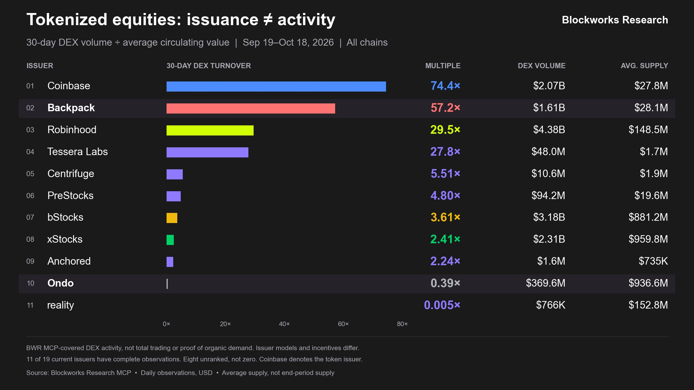

Backpack's tokenized stocks on Solana: what makes them trade, and what mStocks should build
Backpack 的代币化股票为什么交易得起来，以及 mStocks 应该怎么做
A $28M float that turns over 57 times a month. We combine 90 days of our own Dune data with Blockworks Research's execution study to explain where Backpack's volume comes from, why its price stays anchored to the real share, and what that means for the mStocks ecosystem on Mantle.
2,800 万美元的流通量，一个月周转 57 次。我们把自己在 Dune 上跑的 90 天数据和 Blockworks Research 的成交质量研究放在一起，回答三个问题：Backpack 的成交从哪来，价格为什么能锚住真股票，以及这对 Mantle 上 mStocks 的生态意味着什么。
The headline numbers, the charts and the wallet table come from our own Dune dashboard: 13 queries over Backpack's 88 stock mints on Solana, 2026-07-21 to 10-18 UTC. Figures from Blockworks Research are labelled as such. Open the Dune dashboard →
摘要里的核心数字、全部图表和地址表都来自我们自己搭建的 Dune dashboard：13 个查询，覆盖 Backpack 在 Solana 上的 88 个股票代币，窗口为 2026-07-21 至 10-18（UTC）。来自 Blockworks Research 的数字都已单独标注。打开 Dune dashboard →
Summary
摘要
- The volume is structural, not issuance-driven. Backpack's float is 3% of xStocks', yet it out-traded xStocks in single-name stocks from June to August ($2.7B vs $1.45B, Blockworks). Our data: $2.06B over 90 days, 92% of it the stock traded against dollars.
- The anchor is instant two-way conversion. Withdrawing a share from Backpack Exchange mints the token on Solana in seconds; depositing burns it back into a brokerage entitlement. $303M moved this way in 90 days, almost all on weekdays.
- Conversion lets market makers quote from day one. Because they can dump or refill inventory through Backpack, prop AMMs quoted every listing from launch: 53% of SPCX volume on day one, 62% of Backpack volume in Jul–Aug, versus 86% passive pools for xStocks (Blockworks).
- Arbitrage bots then pull every other venue to that price. 33% of volume is atomic arbitrage, mostly prop AMM ↔ public pool. Volume spikes 6.5× in the hour of the US open: the onchain price follows Wall Street.
- The result is measurably better execution. Backpack SPCX fills beat xStocks SPCXx by 1.2–2.4 bps against the stock's own quote, and quoted lower round-trip costs in 98% of matched tests. Through Jupiter, even xStocks buyers route 81% via Backpack SPCX.
- The weak spots are weekends, size and memes. Conversion nearly stops on weekends, prop AMM depth thins out by $50K, and the September memecoin wave (up to $7.9M a day) faded to under $1M a day by October.
- 成交来自结构，不是来自发行量。 Backpack 的流通量只有 xStocks 的 3%，但 6–8 月单只股票的 DEX 成交反而超过 xStocks（$2.7B 对 $1.45B，Blockworks）。我们的数据：90 天 $2.06B，其中 92% 是用美元买卖股票本身。
- 锚是秒级的双向申赎。 从 Backpack 交易所把股票提到 Solana 就是铸造代币，几秒到账；充回交易所就是销毁、换回券商账户里的股票。90 天走了 3.03 亿美元，几乎全在工作日。
- 能申赎，做市商才敢从第一天报价。 库存多了可以换回股票，少了可以从股票换出代币，所以 prop AMM 每只新股一上线就报价：SPCX 首日 53%、7–8 月 Backpack 62% 的成交在 prop AMM；而 xStocks 86% 在被动池子（Blockworks）。
- 套利机器人把其他场所都拉到这个价格。 33% 的成交是原子套利，主要是 prop AMM ↔ 公共池。美股开盘那一小时成交暴增 6.5 倍：链上价格跟着美股走。
- 结果是可测量的更好成交。 以股票自身报价为基准，Backpack SPCX 比 xStocks SPCXx 便宜 1.2–2.4 bps；配对报价测试里 98% 更便宜。通过 Jupiter，连 xStocks 的买单都有 81% 先经过 Backpack SPCX。
- 短板在周末、大单和 meme。 周末申赎几乎停摆；单笔到 $5 万时 prop AMM 的深度明显变薄；九月的 meme 浪潮（最高每天 $7.9M）到十月已不足每天 $1M。
Build the anchor before the demand: Bybit ⇄ Mantle conversion in seconds, market makers quoting on prop AMMs from launch, cheap composable routing for arbitrage, then a 24/7 hedge leg and meme / lending demand on top. Details in Section 8.
先锚后需求：Bybit ⇄ Mantle 秒级申赎，做市商从上线第一天在 prop AMM 报价，便宜可组合的路由让套利者进来，然后再叠加 7×24 的对冲腿和 meme / 借贷需求。详见第 8 节。
01The turnover puzzle周转之谜
Same issuance, wildly different activity. Backpack sits second on Blockworks' turnover ranking with one of the smallest floats.
发行量差不多，活跃度天差地别。Backpack 用很小的流通量，在 Blockworks 的周转排名里排第二。

| Issuer · same 30 days | 发行方 · 同一 30 天 | DEX volume | DEX 成交 | Avg. float | 平均流通 | Turnover | 周转 |
|---|---|---|---|---|---|---|---|
| Backpack | $1.61B | $28.1M | 57.2× | ||||
| xStocks · all chains | xStocks · 全链 | $2.31B | $959.8M | 2.41× | |||
| xStocks · Mantle (our measurement) | xStocks · Mantle（我们自测） | $243K | $4.6M | 0.05× |
On Mantle, a third of that $243K is our own Bybit ↔ Fluxion arbitrage bot. The question this report answers: what does Backpack have that turns a small float into continuous trading, and which parts can mStocks copy?
在 Mantle 上，这 24.3 万美元里有三分之一是我们自己的 Bybit ↔ Fluxion 套利机器人。这份报告要回答的是：Backpack 靠什么让很小的流通量持续被交易？哪些是 mStocks 可以复制的？
02How Backpack stocks workBackpack 股票的结构
One share, two markets, connected in seconds.
一股股票，两个市场，几秒钟打通。
The exchange holds the real share
交易所持有真股票
- Real shares held as US brokerage security entitlements
- Weekdays: orders routed to US exchanges; RFQ quotes in extended hours
- Weekends: native weekend order book run by market makers
- Equity perps (SPCX, MU, SNDK…) and shares usable as collateral (since Sep 1)
- 真股票：以美国券商证券权益的形式持有
- 工作日：订单路由到美国交易所；盘前盘后夜盘用询价报价
- 周末：自建周末订单簿，由做市商提供流动性
- 股票永续（SPCX、MU、SNDK…），股票可作保证金（9 月 1 日起）
88 tokens, redeemable 1:1
88 个代币，可 1:1 赎回
- SPL Token-2022; legally a BVI-issued trust receipt that detokenizes into a brokerage entitlement
- Withdraw = mint (~$0.50 fee, seconds); deposit = burn (free, seconds)
- Self-custodied, 24/7, usable across Solana DeFi; dividends reinvested by rebasing
- Live since SpaceX's IPO day (2026-06-12); market makers coordinated by Sunrise
- SPL Token-2022；法律上是 BVI 发行的信托凭证，可以“去代币化”成券商账户里的股票权益
- 提币 = 铸造（约 $0.50，几秒）；充值 = 销毁（免费，几秒）
- 自托管、7×24、可在 Solana DeFi 里使用；分红以 rebase 方式再投资
- SpaceX IPO 当天（2026-06-12）上线；做市商由 Sunrise 统一协调
Backpack vs xStocks: the claim decides the liquidity
Backpack 对 xStocks：权益结构决定流动性
| Backpack | xStocks | ||||
|---|---|---|---|---|---|
| Legal claim | 法律权益 | Trust receipt; detokenizes into a stock entitlement | 信托凭证，可换成股票权益 | 1:1 collateralized debt security against Backed (acquired by Kraken); no share ownership | 对 Backed（已被 Kraken 收购）的 1:1 抵押债务证券，不拥有股票 |
| Conversion | 申赎 | Direct, seconds, inside the user's Backpack account | 直接、秒级，在用户自己的 Backpack 账户里完成 | Possible via Backed, but not instant or integrated with a brokerage | 可以通过 Backed 赎回，但不是即时的，也没有接入券商账户 |
| Liquidity model | 流动性模式 | Prop AMMs (>60% of volume) | prop AMM（60% 以上的成交） | Passive AMM pools (86% of volume) | 被动 AMM 池子（86% 的成交） |
| Breadth | 品种 | 88 single names, no ETFs | 88 只个股，没有 ETF | Broader, incl. SPY and CRCL; regained volume lead in late August (61% vs 31%) | 品种更多，有 SPY、CRCL；8 月底重新拿回成交第一（61% 对 31%） |
Sources: Backpack support docs (Tokenized Securities, Conversion Flow, Weekend Stock Trading); Blockworks Research, “Tokenized Equities on Solana: From Issuance to Execution” (2026-09-04).
来源：Backpack 支持文档（Tokenized Securities、Conversion Flow、Weekend Stock Trading）；Blockworks Research《Tokenized Equities on Solana: From Issuance to Execution》（2026-09-04）。
03Where the volume comes from成交从哪来
90 days of Dune data across all 88 Backpack mints: who trades what, where, and against what.
Dune 上 Backpack 全部 88 个代币的 90 天数据：交易什么、在哪交易、用什么计价。
Data: 数据：Dune dashboard · query查询 9026713
Data: 数据：Dune dashboard · query查询 9026714
- Concentrated. SPCX, MU and SKHY are 65% of volume; SPCX clears 73% on prop AMMs.
- Mostly the stock itself. 92% is against USDC/USDT/SOL, 8% memecoin or other tokens, under 0.1% against xStocks.
- Small tickets. 61% of dollar volume is in trades under $1K; only 5% is above $10K.
- 高度集中。 SPCX、MU、SKHY 三只占 65%；SPCX 有 73% 在 prop AMM 成交。
- 主要是股票本身。 92% 兑 USDC/USDT/SOL，8% 以 meme 或其他代币计价，兑 xStocks 不到 0.1%。
- 单笔很小。 61% 的金额来自 1,000 美元以下的单子，1 万美元以上只占 5%。
Data: 数据：Dune dashboard · query查询 9026712
Two regimes in 90 days
90 天里的两个阶段
| Month | 月份 | DEX volume | DEX 成交 | Prop AMM | Prop AMM | Atomic arb | 原子套利 | Memecoin-quoted | meme 计价 | Meme routed via stock | meme 借道股票 | Mint+burn ÷ DEX | 申赎 ÷ DEX |
|---|---|---|---|---|---|---|---|---|---|---|---|---|---|
| Jul (21–31) | 7 月（21–31 日） | $381M | 58% | 47% | 0% | 0% | 4% | ||||||
| Aug | 8 月 | $475M | 58% | 45% | 0% | 1% | 4% | ||||||
| Sep | 9 月 | $710M | 32% | 23% | 17% | 27% | 22% | ||||||
| Oct (1–18) | 10 月（1–18 日） | $496M | 34% | 25% | 11% | 12% | 23% |
Jul–Aug was a market-maker market: prop AMMs carried 58%, atomic arbitrage nearly half, no memecoin pairs, and weekends were almost idle ($3.3M a day). September brought retail: StonkFun moved to Raydium LaunchLab (Sep 5) and pump.fun launched Custom Pairs (Sep 9), letting anyone launch memecoins priced in stocks. Weekend volume rose to $14.7M a day (4.5×) and the mint/redeem loop scaled up roughly 10–20×. By mid-October memecoin flow had faded from $7.9M to $0.9M a day, yet total volume stayed above the pre-September level.
7–8 月是做市商的市场：prop AMM 占 58%，原子套利接近一半，没有 meme 交易对，周末几乎没量（每天 $3.3M）。9 月散户进场：StonkFun 9 月 5 日迁到 Raydium LaunchLab，pump.fun 9 月 9 日上线 Custom Pairs，任何人都能发以股票计价的 meme。周末成交升到每天 $14.7M（4.5 倍），申赎通道也放大了约 10–20 倍。到 10 月中，meme 成交从每天 $7.9M 掉到 $0.9M，但总成交仍高于 9 月之前。
Memecoin-quoted share is a floor: Dune does not decode pump.fun Custom Pairs. “Atomic arb” and “routed via stock” use transaction-level classification (Section 4); they overlap with the quote-asset split and should not be added.
meme 计价占比是下限：Dune 不解析 pump.fun Custom Pairs。“原子套利”和“借道股票”按交易归类（见第 4 节），与计价资产的拆分有重叠，不能相加。
04Why the price holds价格为什么锚得住
Six pieces of evidence, from our onchain data and Blockworks' execution study.
六组证据，来自我们的链上数据和 Blockworks 的成交质量研究。
4.1 Prop AMMs quote from day one, around the clock
4.1 prop AMM 从第一天、全天候报价
Prop AMMs quote from live stock-market data and their own view of fair value, but inventory limits how much they can show. Backpack's two-way conversion removes that limit: excess tokens can be turned into stock, and stock into tokens when inventory runs low. Blockworks finds prop AMMs took 53% of SPCX volume on day one and 64% in its first full week, versus a few percent for xStocks. From Jun 12 to Aug 30 they cleared 60% during market hours, 65% overnight and 59% on weekends. Over Jul–Aug: 62% of Backpack volume on prop AMMs; 86% of xStocks volume in passive pools.
prop AMM 根据实时股价和自己对公允价值的判断报价，但能报多少受库存限制。Backpack 的双向申赎解决了这个问题：代币多了可以换回股票，少了可以用股票换出代币。Blockworks 发现，prop AMM 在 SPCX 上线首日拿到 53% 的成交、首个完整周 64%，而 xStocks 同期只有几个百分点。6 月 12 日至 8 月 30 日，prop AMM 在 美股交易时段占 60%、夜盘 65%、周末 59%。7–8 月 Backpack 62% 的成交在 prop AMM，xStocks 86% 在被动池子。
Our Dune data agrees for the same months (58% prop AMM in Jul–Aug; Dune misses a few prop AMMs). The share fell to about a third from September, not because prop AMMs left, but because memecoin flow arrived on public pools.
我们的 Dune 数据在同一时期得到一致的结果（7–8 月 prop AMM 占 58%，Dune 少解析了几家 prop AMM）。9 月起占比降到三分之一左右，不是因为 prop AMM 退出，而是 meme 流量进了公共池子。
4.2 The conversion loop is the weekday anchor
4.2 申赎通道是工作日的锚
Data: 数据：Dune dashboard · query查询 9026718
- $158M minted and $145M burned in 90 days, equal to 15% of DEX volume.
- Weekdays only: $4.6M a weekday (16% of that day's DEX volume) vs $0.24M a weekend day (2.6%). On weekdays Backpack can route to US exchanges, so arbitrageurs can buy the share and mint, or buy the token and redeem.
- Two-way: daily mints and burns nearly cancel (net is 13% of gross on weekdays), and 35% of redeemed value comes from wallets that also withdrew. The same desks move inventory in both directions.
- 90 天铸造 $158M、销毁 $145M，相当于 DEX 成交的 15%。
- 只在工作日运转：工作日每天 $4.6M（占当天 DEX 16%），周末每天 $0.24M（2.6%）。工作日 Backpack 能把订单路由到美国交易所，套利者可以买股票再铸造，或者买代币再赎回。
- 双向进出：每天的铸造和销毁几乎相等（工作日净差只占总额的 13%）；被赎回的金额里 35% 来自也提过币的钱包。同一批做市商在双向搬库存。
4.3 A third of volume is atomic arbitrage
4.3 三分之一的成交是原子套利
We rebuilt every transaction touching a Backpack stock from all its DEX legs. A transaction where every token sold is bought back (e.g. USDC → SPCX on Meteora → USDC on ZeroFi) is a cycle: atomic arbitrage.
我们把每一笔碰到 Backpack 股票的交易，用它所有的 DEX 腿还原出来。如果卖出的每种代币最后都被买回（例如 USDC → 在 Meteora 买 SPCX → 在 ZeroFi 卖回 USDC），就是一个闭环，也就是原子套利。
Data: 数据：Dune dashboard · query查询 9026720 / 9026721
Prop AMM ↔ public pool cycles are 21% of volume from just 2,295 signers (~$186K each); prop AMM ↔ prop AMM adds 11%. Cycles against xStocks are 0.4%. This is a floor: arbitrage across transactions and off-chain hedges are invisible.
prop AMM ↔ 公共池的闭环占 21%，只有 2,295 个签名地址（平均每个约 $186K）；prop AMM 之间再占 11%。和 xStocks 之间的闭环只有 0.4%。这是下限：跨交易的套利和链下对冲在链上看不到。
4.4 The price follows the US market
4.4 价格跟着美股走
Data: 数据：Dune dashboard · query查询 9026715
Weekday volume in the 13:00 UTC hour (US open at 13:30) is 6.5× the Asia-session average, with a second bump at the 20:00 UTC close. Weekends have no open and no spike. Onchain trading does not discover the price; it re-aligns to Wall Street when Wall Street opens. On weekends, Blockworks notes prop AMMs likely price off other 24/7 venues and Pyth feeds.
工作日 13:00 UTC 这一小时（美股 13:30 开盘）的成交是亚洲时段平均值的 6.5 倍，20:00 UTC 收盘前后再放量一次；周末没有开盘，也没有峰值。链上交易不负责发现价格，而是在美股开盘时重新对齐。Blockworks 认为周末 prop AMM 大概率参考其他 7×24 场所和 Pyth 喂价报价。
4.5 Execution is measurably better (Blockworks)
4.5 成交质量可测量地更好（Blockworks）
| Test | 测试 | Result | 结果 |
|---|---|---|---|
| Realized $100–$20K fills vs the stock's preceding touch (SIP NBBO / Blue Ocean) | $100–$2 万实际成交 vs 股票前一刻报价（SIP NBBO / Blue Ocean） | Backpack SPCX 1.23 bps cheaper than xStocks SPCXx in regular hours, 2.42 bps overnight | Backpack SPCX 比 xStocks SPCXx 常规时段便宜 1.23 bps，夜盘便宜 2.42 bps |
| Matched Jupiter quotes, 7-stock basket, round trip | Jupiter 配对报价，7 只股票，买入再卖出 | Backpack cheaper in 98% of hourly comparisons for $500–$10K; median advantage 27–33 bps, narrowing to 1.6 bps at $50K | $500–$1 万订单 98% 的小时比较里 Backpack 更便宜；中位优势 27–33 bps，到 $5 万时缩小到 1.6 bps |
| $5K quotes vs the stock's midpoint | $5,000 报价 vs 股票中间价 | Backpack cheaper in 78% of tests and 96% of 30-minute windows | 78% 的测试、96% 的 30 分钟窗口里 Backpack 更便宜 |
| Backpack (Solana) vs Robinhood Chain fills | Backpack（Solana）vs Robinhood Chain 实际成交 | 5.8 bps cheaper under $1K, 12.1 bps for $10–20K; before gas (median $0.075 on Robinhood Chain vs $0.0006 on Solana) | $1,000 以下便宜 5.8 bps，$1–2 万便宜 12.1 bps；还没算 gas（Robinhood Chain 中位 $0.075，Solana $0.0006） |
4.6 Composability turns competing issuers into shared liquidity
4.6 可组合性让竞争的发行方共享流动性
Because SPCX and SPCXx trade near 1:1 in a shared pool, Jupiter routes 81% of $1K SPCXx buys and 64% of sells through Backpack SPCX, letting xStocks users tap Backpack's tighter prop AMM quotes. The reverse is rare (2–5% of Backpack buys, no sells). This matches our finding that cycles against xStocks are only 0.4%: the wrappers are linked by routing, not by arbitrage. Issuers compete on redemption and rights while sharing execution liquidity.
因为 SPCX 和 SPCXx 在一个公共池子里以接近 1:1 交易，Jupiter 把 $1,000 SPCXx 买单的 81%、卖单的 64% 先路由经过 Backpack SPCX，让 xStocks 用户也用上 Backpack 更紧的 prop AMM 报价。反向很少（Backpack 买单只有 2–5%，卖单为 0）。这和我们“对 xStocks 的闭环只有 0.4%”的发现一致：两种代币是通过路由连起来的，不是通过套利。发行方在申赎和权益上竞争，但共享成交流动性。
05Who trades, and how long they hold谁在交易、拿多久
Professional flow at the top, a retail long tail, and a small but growing holding base.
头部是专业资金，后面是散户长尾，还有一小部分正在形成的长期持仓。
Data: 数据：Dune dashboard · query查询 9026717
- Full-universe bot
AgmLJ…: 2.25M trades in 90 days, $82 average, all 79 stocks - Single-name pool arbitrageurs
Hasda…,m7Vm…,MfDu…: 3–4 names, $500–$950 a trade, almost never on prop AMMs - Prop AMM takers
Gpji…,GxDC…,DcQN…: 58–72% of their flow on prop AMMs - Converters
bpfe9…: withdrew $25.4M from Backpack and traded $25.2M on DEXs
- 全品种机器人
AgmLJ…：90 天 225 万笔、平均 $82、覆盖 79 只 - 单品种池子套利者
Hasda…、m7Vm…、MfDu…：只做 3–4 只，每笔 $500–$950，几乎不碰 prop AMM - prop AMM 吃单者
Gpji…、GxDC…、DcQN…：58–72% 的成交在 prop AMM - 申赎者
bpfe9…：从 Backpack 提了 $25.4M，在 DEX 上成交 $25.2M
- Of every $100 traded, ~$70 is the same taker in and out within a day; ~$10 is clear one-way position building
- ~85% of purchase notional resold within one day; 8.5% never resold by Aug 31
- $243M of purchases held at least a week, $220M at least two weeks
- That holding base creates demand for lending and perp collateral
- 每交易 $100，约 $70 是同一个吃单者当天进出，约 $10 是明确的单向建仓
- 约 85% 的买入金额在一天内卖出；8.5% 到 8 月 31 日都没卖
- $2.43 亿买入持有超过一周，$2.2 亿超过两周
- 这部分持仓会带来借贷和永续保证金的需求
The top 30 wallets do 53% of volume; 425K wallets share the rest. The ecosystem's engine is a few dozen professional roles. Retail rides on top of it.
前 30 个地址占 53% 的成交，剩下的由 42.5 万个地址分。生态的发动机是几十个专业角色，散户是在这之上的。
06The model, and where it breaks模式与短板
A loop with four links. Each depends on the one before it.
一个四环的闭环，每一环都依赖上一环。
A token you can convert 1:1 in seconds
几秒钟就能 1:1 申赎的代币
Any drift from the real share is arbitraged through the exchange.
链上价格一偏离真股价，就有人通过交易所搬回来。
MMs can hedge and rebalance, so they quote
做市商能对冲、能调库存，所以敢报价
Prop AMMs from day one, coordinated by Sunrise.
prop AMM 从上线第一天报价，由 Sunrise 协调。
Bots pull every venue to that price
机器人把所有场所拉到同一价格
Pools, meme pools and other wrappers converge via Jupiter.
公共池、meme 池、别家代币都通过 Jupiter 对齐。
Retail and memes get a fair price anywhere
散户和 meme 在哪都拿到公平价格
More flow makes quoting pay, back to ②.
成交越多，做市越赚钱，回到 ②。
Where it breaks
短板
- Weekends. Conversion falls to 1/20 of a weekday and volume drops by two-thirds; prices rest on MM inventory, perps and oracle feeds.
- Size. The quote advantage narrows from ~30 bps to 1.6 bps at $50K as prop AMM quotes thin out. Pools remain the backstop for larger orders.
- Breadth. No ETFs. xStocks regained the volume lead in late August with SPY and CRCL.
- Memes are transient. They doubled weekend activity in September and were mostly gone by mid-October.
- Concentration. Three names are 65% of volume, and one coordinator (Sunrise) organizes the market makers.
- 周末。 申赎降到工作日的 1/20，成交少三分之二；价格靠做市商库存、永续和预言机喂价撑住。
- 大单。 单笔到 $5 万时报价优势从约 30 bps 缩到 1.6 bps，prop AMM 报价变薄，大单仍要靠池子兜底。
- 品种。 没有 ETF；xStocks 靠 SPY、CRCL 在 8 月底拿回成交第一。
- meme 不持久。 九月让周末成交翻了几倍，十月中基本退潮。
- 集中。 三只股票占 65% 的成交；做市商由一家（Sunrise）协调。
07Mantle today, link by link逐环对照 Mantle 现状
The asset is not the problem. Every link of the loop is.
问题不在资产本身，而在闭环的每一环。
| Backpack · Solana | xStocks · Mantle today | xStocks · Mantle 现状 | |||
|---|---|---|---|---|---|
| ① Anchor | ① 锚 | Exchange withdraw = mint, deposit = burn, seconds; $303M in 90 days | 交易所提币即铸造、充值即销毁，秒级；90 天 $303M | Supply for all 1,506 tokens sits in one issuer inventory address; a fast public Bybit ⇄ Mantle path is to be confirmed | 1,506 个代币的库存都在一个发行方地址；Bybit ⇄ Mantle 的快速公开申赎路径待确认 |
| ② Quote | ② 报价 | 5 prop AMMs, 43–62% of volume; MMs coordinated per listing | 5 家 prop AMM，占 43–62%；每次上新统一协调做市商 | Fluxion (10 pools) and Merchant Moe; TSLA depth at ±0.5% is $122 | Fluxion（10 个池子）和 Merchant Moe；TSLA ±0.5% 深度只有 $122 |
| ③ Arbitrage | ③ 搬砖 | ~4,000 bots; Jupiter routing across all venues and wrappers | 约 4,000 个机器人；Jupiter 在所有场所和代币之间路由 | Mostly our own Bybit ⇄ Fluxion bot (36% of volume) | 主要是我们自己的 Bybit ⇄ Fluxion 机器人（36% 的成交） |
| ④ Flow | ④ 成交 | 425K wallets; StonkFun and pump.fun use stocks as meme quote | 42.5 万个地址；StonkFun、pump.fun 把股票当 meme 计价货币 | No launchpad yet; 1,500+ tickers, only 14 hold more than $10K | 还没有发射台；1,500+ 只代币，流通超过 $1 万的只有 14 只 |
| 30-day turnover | 30 天周转 | 57.2× | 0.05× |
Mantle does have one structural advantage Backpack lacks: Bybit trades 24/7. If conversion and hedging run through Bybit, the weekend gap that limits Backpack need not exist for mStocks.
Mantle 有一个 Backpack 没有的结构性优势：Bybit 是 7×24 交易的。如果申赎和对冲都走 Bybit，限制 Backpack 的周末短板在 mStocks 上可以不存在。
08Recommendations for the mStocks ecosystem对 mStocks 生态的建议
Anchor before demand. P0 items should be live at launch; without them, demand will not stick.
先锚后需求。P0 应在上线时就位；没有它们，带来的需求留不住。
Make Bybit ⇄ Mantle conversion the anchor
把 Bybit ⇄ Mantle 申赎做成锚
P0Coordinate market makers on prop AMMs from day one
从第一天起协调做市商在 prop AMM 报价
P0Make arbitrage and routing cheap and composable
让套利和路由便宜、可组合
P0Keep fees Solana-level and sequencing neutral
手续费保持 Solana 水平，排序保持中立
P1Close Backpack's weekend gap with Bybit's 24/7 market
用 Bybit 的 7×24 市场补上 Backpack 的周末短板
P1Launch narrow and event-driven
上线时品种要少，并借势热点事件
P1Serve the holders: lending and perp collateral
服务持有者：借贷和永续保证金
P2Add meme demand on top, and measure it honestly
在上面叠加 meme 需求，并如实衡量
P2Scoreboard: track against Backpack's benchmarks
跟踪指标：以 Backpack 为基准
| Metric | 指标 | Backpack | Backpack | Mantle xStocks today | Mantle xStocks 现状 | Tied to | 对应建议 |
|---|---|---|---|---|---|---|---|
| 30-day turnover (DEX volume ÷ float) | 30 天周转（DEX 成交 ÷ 流通） | 57× | 0.05× | R1–R6 | |||
| Mint + burn ÷ DEX volume, weekdays | 申赎 ÷ DEX 成交（工作日） | 16% | n/a | 无 | R1 | ||
| Prop AMM / RFQ share of volume | prop AMM / RFQ 成交占比 | 43–62% | not measured | 未测 | R2 | ||
| Atomic arb signers (external) | 外部原子套利地址数 | ~4,000 | ~1 (ours) | 约 1 个（我们的） | R3 | ||
| Weekend ÷ weekday daily volume | 周末 ÷ 工作日日均成交 | 33% | n/a | 无 | R5 | ||
| Round-trip cost at $5K vs stock midpoint | $5,000 往返成本 vs 股票中间价 | best on Solana | Solana 最优 | not measured | 未测 | R2–R4 | |
| Share of volume in stock ↔ stablecoin pairs | 股票 ↔ 稳定币交易对占比 | 92% | n/a | 无 | R8 |
09Open questions to confirm待确认问题
- Conversion path. Can Bybit and the mStocks issuer support two-way, seconds-level mint/redeem for MMs and users, including on weekends?
- Legal claim. What do mStocks holders own, and can they redeem into a brokerage or Bybit position like Backpack's trust receipt?
- Market makers. Which desks will quote on Mantle prop AMMs at launch, and what inventory and hedging terms do they need?
- Fees and ordering. What is Mantle's median swap fee today, and what can MMs rely on for ordering and latency?
- Wrapper linkage. Will mStocks coexist with xStocks on Mantle, and who seeds the 1:1 linking pools?
- 申赎路径。 Bybit 和 mStocks 发行方能否为做市商和用户提供双向、秒级、包括周末的铸造/赎回？
- 法律权益。 mStocks 持有者拥有的是什么？能否像 Backpack 的信托凭证那样赎回成券商或 Bybit 持仓？
- 做市商。 上线时哪些做市商会在 Mantle 的 prop AMM 报价？他们需要什么库存和对冲条件？
- 手续费与排序。 Mantle 目前的兑换手续费中位数是多少？做市商在排序和延迟上能依赖什么？
- 代币之间的连接。 mStocks 会不会和 Mantle 上的 xStocks 并存？谁来提供 1:1 连接池的初始流动性？
AAppendix: method and sources附录：方法与来源
- Window and scope. 2026-07-21 to 10-18 UTC (90 days, ending on the Blockworks 30-day chart's end date); the 88 mints on Backpack's official asset list (snapshot 2026-10-26).
- Tables. Dune
dex_solana.tradesandtokens_solana.transfers. Dune misses pump.fun Custom Pairs and some prop AMMs: for the last 30 days Dune sees $846M vs Blockworks' $1.61B. About 4.8M trades (mostly memecoin pairs) have no USD price and are excluded from dollar totals. - Prop AMMs by Dune project name: zerofi, goonfi, scorch, humidifi, tessera.
- Atomic arbitrage = every token sold in the transaction is bought back. It is a floor: cross-transaction arbitrage and off-chain hedges are invisible. “~4,000 bots” adds the two main signer groups, which may overlap.
- Mint/burn USD valued at the same-day DEX VWAP per stock; within 0.2% of Dune's price where both exist.
43DbAv…is the only mint recipient over 90 days (inferred Backpack withdrawal wallet); burn owners are inferred user deposit addresses; about half of withdrawn-token flow cannot be attributed. - Weekend = Saturday and Sunday UTC. Wallet archetypes are behavioural, not identities. xStocks are identified by tickers ending in lowercase “x”.
- Blockworks figures come from “Tokenized Equities on Solana: From Issuance to Execution” (Sam Schubert, 2026-09-04; data mostly Jun 12–Aug 31), the 0xResearch newsletter “Backpack's execution edge” (2026-08-05), and the “issuance ≠ activity” chart.
- Mantle figures come from the company-share deck P1–P2 (
company-share/references/p1b-xstocks-mantle-2026-10-20.md).
- 窗口与范围。 2026-07-21 至 10-18 UTC（90 天，结束日与 Blockworks 30 天图对齐）；Backpack 官方资产列表上的 88 个 mint（2026-10-26 快照）。
- 数据表。 Dune
dex_solana.trades、tokens_solana.transfers。Dune 不解析 pump.fun Custom Pairs 和部分 prop AMM：最近 30 天 Dune 可见 $846M，Blockworks 口径 $1.61B。约 480 万笔成交（多为 meme 交易对）没有美元价格，未计入金额。 - Prop AMM 按 Dune project 名：zerofi、goonfi、scorch、humidifi、tessera。
- 原子套利 = 同一笔交易里卖出的每种代币都被买回。这是下限：跨交易套利和链下对冲看不到。“约 4,000 个机器人”是两类主要签名地址相加，可能有重叠。
- 申赎金额按当天每只股票的 DEX 均价计价；有 Dune 价格的日子两者相差不到 0.2%。
43DbAv…是 90 天内唯一接收铸造的地址（推断为 Backpack 提币钱包）；销毁地址推断为用户充值地址；约一半的提币后流向无法归类。 - 周末 = UTC 周六、周日。地址分类基于行为特征，不是身份确认。xStocks 按以小写 “x” 结尾的代币符号识别。
- Blockworks 数字来自《Tokenized Equities on Solana: From Issuance to Execution》（Sam Schubert，2026-09-04；数据主要为 6/12–8/31）、0xResearch 简报《Backpack's execution edge》（2026-08-05）以及“issuance ≠ activity”图。
- Mantle 数字来自全公司分享 P1–P2（
company-share/references/p1b-xstocks-mantle-2026-10-20.md）。
| Resource | 资源 | Location | 位置 |
|---|---|---|---|
| Dune dashboard (private) | Dune dashboard（private） | dune.com/mantlexyz/backpack-tokenized-stocks-onchain-evidence-private | |
| Dune queries (private) | Dune 查询（private） | 9026703 mint list · 9026711 KPIs · 9026712 daily · 9026713 venues · 9026714 stocks · 9026715 hourly · 9026716 size · 9026717 traders · 9026718 mint/burn · 9026719 withdrawals · 9026720/9026721 tx classes · 9026780 flow | |
| Data snapshot | 数据快照 | references/backpack-stocks-dune-90d.json | |
| Blockworks article (text) | Blockworks 文章（全文） | references/blockworks-tokenized-equities-on-solana-2026-09-04.md · x.com/minnus/status/2095848292189982836 |